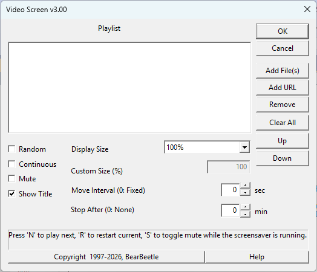
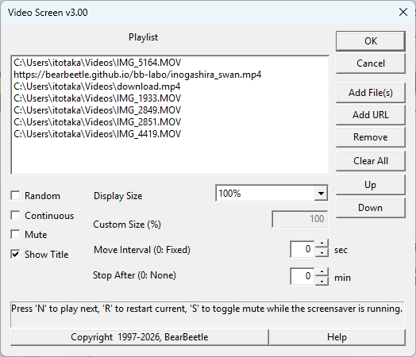

1. Introduction
"Video Screen" is a screensaver that displays videos. When the screensaver starts, it plays the registered videos one after another. Additionally, the display position changes periodically.
This software is provided as Open Source Software (OSS) under the MIT License. The source code is available on GitHub, allowing for free customization and redistribution.
"Video Screen" features the following:
- Broad Format Support: Plays any video format supported by Windows Media Player.
- Smart Multi-Monitor Support: Automatically detects your main display accurately, even in complex extended setups. It plays the video solely on the main screen while blacking out secondary monitors.
- Flexible Playback Options: Supports Random Playback, Resume Playback, and Mute functions.
- Burn-in Prevention: The video position changes periodically. The display size is also fully customizable.
- Keyboard Controls: You can control the video playback using the keyboard while the screensaver is running.
* Please be sure to read the Disclaimer and Precautions before use.
Supported Video Formats
The videos playable in "Video Screen" depend on your system environment.
It can play any video that is playable in Windows Media Player.
Supported OS
Windows 11
* Compatibility with Windows 10 and earlier is not confirmed for the latest version.
Production & Copyright
BearBeetle
URL: https://bearbeetle.github.io/bb-labo/
Disclaimer
【Disclaimer and License Information】
This software is released as open source under the "MIT License."
Under the terms of the license, this software is provided "AS IS", without warranty of any kind. The author shall not be held liable for any claim, damages, or other liabilities (including data loss or PC malfunctions) arising from the use of this software. Please use it at your own risk.
(* This statement is a simplified summary of the MIT License disclaimer for general users and does not conflict with the official MIT License. For full legal details and terms of use, please check the LICENSE file in the GitHub repository.)
Precautions
- Settings are NOT compatible with version 2.xx and earlier (previous settings cannot be carried over).
- Suspend and Standby modes are not natively supported and may cause the system to lock up.
You can avoid this by setting the "Playback Stop Time" to end video playback before the system goes into standby (available since v1.70).
2. Installation / Uninstallation
Installation
- Copy
VS.SCRto any folder of your choice. - Right-click on
VS.SCRand select "Install".

Uninstallation
- Delete
VS.SCRfrom the folder where you installed it.
* If you want to perform a complete uninstallation, delete the entire folder located at:
C:\Users\XXX\AppData\Local\BearBeetle
3. Settings
- Open the Windows Screen Saver Settings window.
* The method varies depending on your Windows version.
Example: Right-click on the Desktop → "Personalize" → "Lock screen" → "Screen saver" (under Related settings).
- Select "Video Screen" from the Screen saver dropdown list.
- Click the "Settings" button.
A dialog box named "Video Screen" will appear.
Initially, nothing is registered in the "PlayList".

- Click "Add File(s)" or "Add URL" to specify the video files you want to register.
- When clicking "Add File(s)", you can select multiple files at once by holding down the
ShiftorCtrlkey. - "Add URL" is used when you want to play a video file hosted on the internet.
Note: Streaming services that do not provide direct media file URLs (like standard YouTube links) cannot be played.

- When clicking "Add File(s)", you can select multiple files at once by holding down the
- To remove an item from the "PlayList", select the item and click "Remove".
- To remove all items from the list, click "Clear All".
- You can change the playback order by selecting an item and clicking the "↑" (Up) or "↓" (Down) buttons.
- Check "Random" to randomize the playback order.
- The same content might occasionally play twice in a row.
- Check "Continue" to resume the video from where it stopped the last time the screensaver ran.
- Check "Mute" to disable audio while the video is playing.
- Check "Show Title" to show the name of the file at the top of the screen during playback.
- "Display Size" allows you to set the video scale (e.g., half size, 1x, 2x, 3x).
If you set it to "Custom Size", you can specify the exact scaling percentage. - "Nove Interval" sets how often (in seconds, from 1 to 600) the video jumps to a new location on the screen.
- If set to
0seconds, the video position is fixed at the center.
- If set to
- "Stop After" sets the time (in minutes, from 1 to 600) until video playback automatically stops.
- If set to
0minutes, the video will play endlessly until the screensaver exits. - If you use PC power-saving features (like Suspend), please set this timer so the video stops playing before the PC goes to sleep.
- If set to
- Click "OK" to apply the settings.
- Advanced Setting: Restricting the display range manually
Edit the initialization file:C:\Users\XXX\AppData\Local\BearBeetle\VS2\VS2.INI
Enter the desired width and height values (e.g., 640 and 480) in the configuration file.SCREEN_WIDTH=640
SCREEN_HEIGHT=480
4. Controls During Screensaver Operation
- Press the "N" key to immediately skip to the Next video content.
- Press the "R" key to Restart the currently playing video from the beginning.
- Press the "S" key to toggle the Mute state ON and OFF. (Note: This temporary state will not be saved to your main settings).
* Pressing any other key or moving the mouse will exit the screensaver.
[Back to Top]5. Multi-Monitor Support
In a multi-monitor (multiple displays) environment, you can set which display will show the video by following these steps:
- Right-click on the desktop and select "Display settings" to open the system settings.
- Select the monitor number you want to use for the video (it will be highlighted).
- Scroll down to the "Multiple displays" section and check the box that says "Make this my main display".
6. Other / Version History
Other
- The source code is available on the GitHub repository.
- "Exceptions" or "Illegal Operations" are usually caused by display driver or multimedia driver issues. If updating your drivers does not fix the problem, we recommend discontinuing the use of "Video Screen".
Version History
V.1.0 (1997/8/28) - Initial Release V.3.00 (2026/03/21) - Windows 11 support - Upgraded Video API from MCI to MFPlay (Windows Media Foundation) - Perfected Multi-Monitor support - Open Sourced under MIT License - English language support[Back to Top]